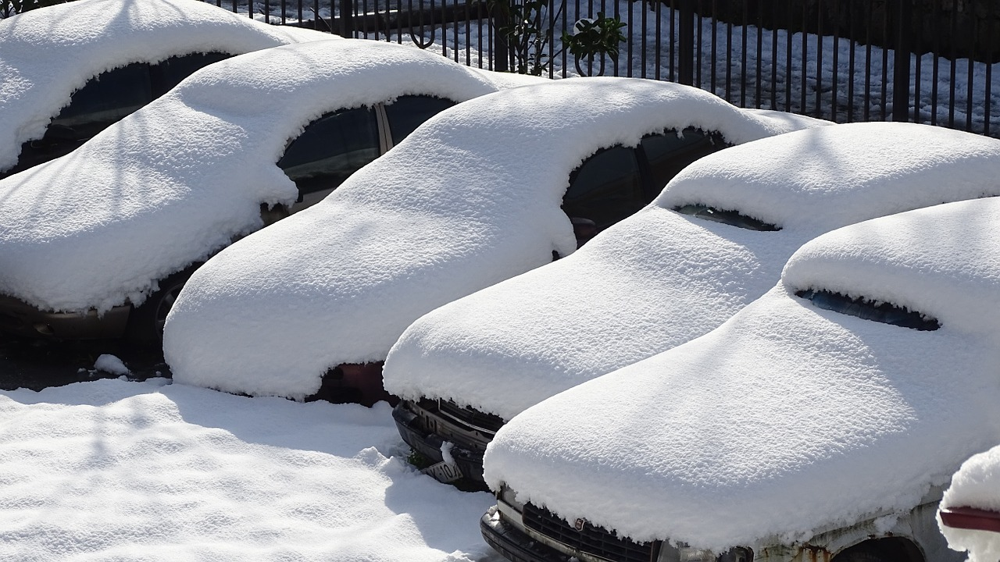

<div>
    <p>Mauris diam velit, porttitor ac malesuada at, semper sed augue. Pellentesque tincidunt hendrerit mi ac lobortis. Cras mattis ipsum justo, vel vulputate ante ullamcorper non. Sed diam ipsum, malesuada eu elementum a, varius at magna. Vivamus consequat vulputate sapien quis pellentesque. Aenean eu volutpat turpis, quis viverra tellus. Proin molestie, dui id vestibulum sodales, sapien metus commodo nisi, quis blandit lorem mi sit amet mauris. Nam maximus suscipit nibh rutrum lacinia. </p>
    <p>Donec suscipit id nisl a fermentum. Maecenas quis metus massa. Maecenas vitae luctus elit. Fusce tristique ipsum in aliquam hendrerit. Ut sit amet urna aliquet, sollicitudin ligula eu, porta felis. Quisque quis ipsum vitae ante fermentum dignissim id vel risus. Ut ornare nisi et arcu vehicula lacinia. Pellentesque vel egestas tortor. Duis quis consectetur felis, vitae fringilla massa. Nullam vitae varius ipsum. Suspendisse pretium tellus in risus ornare iaculis. </p>
    <p>Mauris ac sapien fringilla, molestie mi vel, accumsan lectus. Quisque nec ex sed neque dictum vulputate. Sed fringilla semper molestie. Class aptent taciti sociosqu ad litora torquent per conubia nostra, per inceptos himenaeos. Duis sit amet diam eu orci sodales feugiat non eu lorem. Duis ut volutpat enim. Suspendisse quam nulla, eleifend sit amet nulla ut, laoreet bibendum neque. Donec id metus vel mi facilisis tincidunt non nec eros. In in commodo diam. Sed at elementum ex. </p>
</div>

